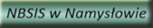

Młodzieżowy Ośrodek Wychowawczy
Towarzystwa "RAZEM W PRZYSZŁOŚĆ"
w Namysłowie
|
|
|
|
|  |
Młodzieżowy Ośrodek Wychowawczy
HISTORIA OŚRODKA
Młodzieżowy Ośrodek Wychowawczy w Namysłowie powstał w 1957 roku na podstawie decyzji ówczesnego
Ministerstwa Oświaty z dnia 30.10.1957 roku celem zapewnienia zorganizowanej opieki dydaktyczno
wychowawczej dla młodzieży niedostosowanej społecznie.
Początkowo był Ośrodkiem dla 80 chłopców w wieku od 14 do 20 lat. W strukturze organizacyjnej
posiadał Szkołę Podstawową z klasami siódmą i ósmą, trzyletnią Zasadniczą Szkołę Zawodową, warsztaty
szkolne oraz internat. Z czasem liczbę miejsc zredukowano do 30 (rok 2000), zlikwidowano Szkołę
Podstawową, cykl nauczania w Szkole Zawodowej skrócono do 2 lat.
Od 1 września 2002 roku Starostwo Powiatowe w Namysłowie przekazało prowadzenie Ośrodka stowarzyszeniu o nazwie Towarzystwo Interwencji Społecznych z siedzibą w Nysie. W związku ze zmianą organu prowadzącego Ośrodek stał się placówką niepubliczną, w tamtym czasie jedyną tego typu w Polsce. Zwiększono również liczbę miejsc z 30 na 48.